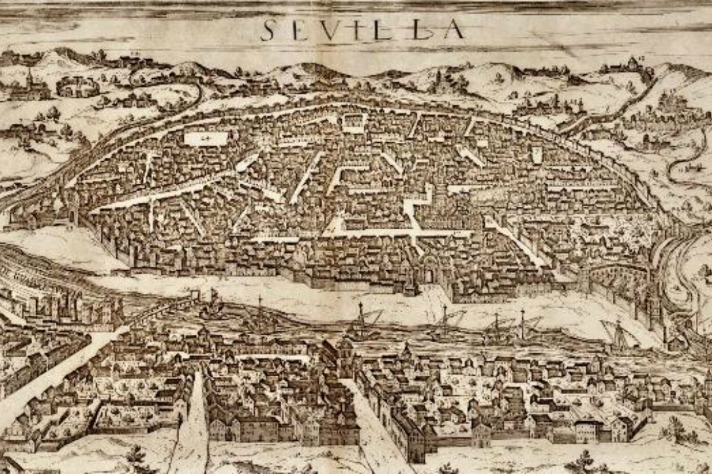

Introduction
Seville is a city with a rich and exciting history, full of ups and downs that have turned it into the charming city of marked character that it is today.
It is the capital and largest city of the Spanish autonomous community of Andalusia and the province of Seville. It is situated on the lower reaches of the River Guadalquivir, in the southwest of the Iberian Peninsula.
It has a municipal population of about 685,000 as of 2021, and a metropolitan population of about 1.5 million, making it the largest city in Andalusia and the fourth-largest city in Spain.
The origins of the city
The origin of Seville, even today, remains unclear, although like so many cities it has its legends; Some people associate it with the fabulous Tharsis, although the most accepted theory is that it was founded by Hercules himself, who would give it to his Hispanic son. From this fact would come the term "hispalis".
According to the most plausible version, the city was founded by the Iberian tribe of the Turdetans who inhabited the Guadalquivir valley, a territory that corresponded to the ancient Tartessos.
The Turdetans called the town they created on an island in the Guadalquivir "Spal" or "Ispal". Later it was populated by the Phoenicians, the Greeks and the Carthaginians. In 205 B.C. Seville was usurped from the Carthaginians by the Romans during the Second Punic War. For two centuries it participated in the convulsive history that the Roman metropolis lived through.
In 43 B.C. the city was taken by Julio César who would change its name to “Iulia Romuela” or “Romula”, becoming the most important city in the Roman province of Bética. Proof of its importance is the fact that, with the arrival of Christianity, the Emperor Constantine the Great granted it the episcopal seat, one of the five into which Hispania was divided.
After the fall of Rome, it was occupied by the Silingo Vandals until they were expelled by the Visigoths, who made it one of the capitals of their reign. At this point, Seville experienced one of the most romantic moments of the Visigothic era when Hermenegildo rebelled against his father, King Leovigildo, and besieged the city, diverting the riverbed of the Guadalquivir.
At this time another memorable event would take place that would become part of the history of the city. During the banquet known as “the candlelight dinner”, the Sevillian nobles extinguished the candles and took advantage of the blackout to assassinate the Gothic king Teudiselo.
Despite the fact that the Gothic capital was moved to Toledo, the cultural importance of Seville was maintained with two important figures, San Leandro and San Isidoro. The shield of the city of Seville has as central figures both bishops together with King Fernando III.
In the year 712 the Muslim Abd al-Aziz ibn Mussa took Seville, changing its name from Hispalis to the Arabic Isbiliyya, from which Seville derives. In 715 the city became dependent on the power of Córdoba. After the fall of the Caliphate of Córdoba, the so-called taifa kingdoms arose throughout the peninsula. In Seville, Abu I Qasim took power, which would initiate the Banu Abbad dynasty, giving rise to the Abadí Kingdom of Seville.
Seville's Golden Age
In 1091, the city was invaded by the Almoravids, and then by the Almohads a few years later. During the Almohad dynasty, Sevilla reached its utmost splendour and became the most important city in Spain. In this era, the Torre del Oro tower was built, as was the Great Mosque, of which the Giralda minaret still remains.

On 23rd November 1248, after a long siege, Seville was conquered by the Christian King Ferdinand III of Castile, and he made it one of the capitals of his kingdom.
In the 16th century some of the most important buildings in the centre of Seville were built, such as the Cathedral, the General Archive of the Indies, the Town Hall, the Casa de la Moneda, the University was founded, as was the kingdom of Castile's first printing press.
At this point, the population reached 150,000 inhabitants, but its splendour was not complete and the city was not able to balance its accounts with the competition from Florence, Genova, Lisbon and the Netherlands
On the brink of an economic disaster, Seville also suffered a demographic catastrophe with the Great Plague in 1649, causing its population to half and not recover until the 19th century.
During the counter-reformation, 73 convents were founded in the city, and this religious environment was the breeding ground for painters such as Valdés Leal, Murillo and Zurbarán, and sculptors Martínez Montañés and Juan de Mesa. Most of the city's churches, altarpieces and images of the famed Holy Easter Week that takes place each year also date back to this time period.
The Casa de Concentración (House of Trade) moved from Seville to Cadiz in 1717, resulting in the city losing a great deal of economic and political importance.
Resurging Stronger than Ever
In 1728 the Royal Tobacco Factory was founded in Seville, paving the way for the city's future. A century later the city started an expansion based on the building of railways.

During the 19th century, Spain played a huge role with regard to national politics: the Peninsular War, the revolutionary Junta of Narváez and Córdova, the uprising against Espartero, the riots because of O'Donnell's coup d'état, the revolution of 1868, and the Cantonal Rebellions in 1873. It was also an important hub of the CNT workers' union.
In the 20th century, Seville organised the Ibero-America Exhibition of 1929, a celebration which notably modified the image of the city.
Before the Spanish Civil War, Seville experienced large anticlerical movements. During the Civil War, it fell almost immediately to the nationalists and spent the rest of the war as a rearguard city.
Once the war finished, Seville suffered two sorrowful events: the Santa Bárbara gunpowder explosion on 13th March 1941 and the floods on 1st November 1961. With the Statute of Autonomy, Seville became the capital of the Autonomous Community of Andalusia.
The Seville Expo '92 was another of the events that gave the city a major push, as new infrastructure prepared the city for the arrival of the 21st century. At present, Seville is one of the most important cities in Spain.